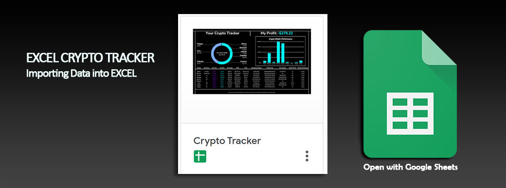
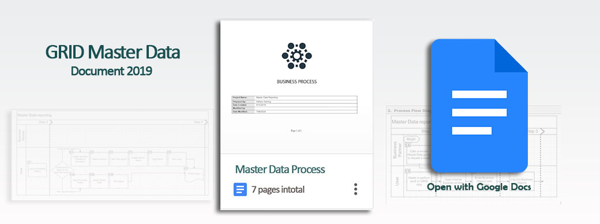
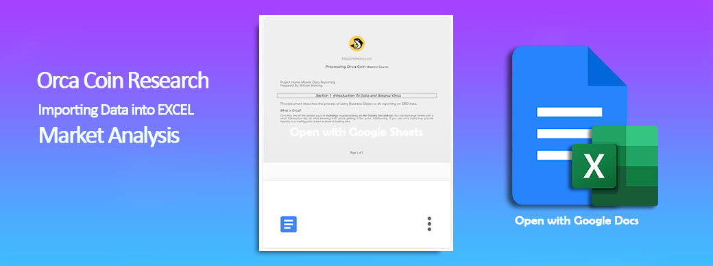

This is a real time dynamic crypto tracker using Excel connecting to coin market cap. I made this because I love Bitcoin and being organised with all my coins.

This document explains, in detail, the process of a request for a report containing GRID Master Data and how users will work in Business Objects to create a report. It also explains how users can run standard reports that will be needed for both informational and auditing purposes.

My work experience utilizing Excel and Word to demonstrate how to import data and make analysis.